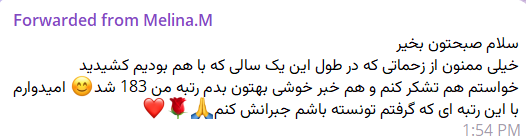
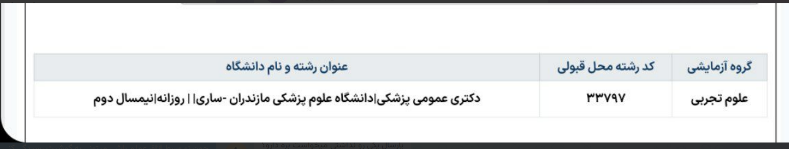
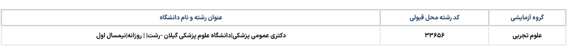
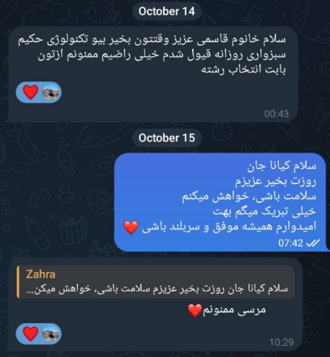
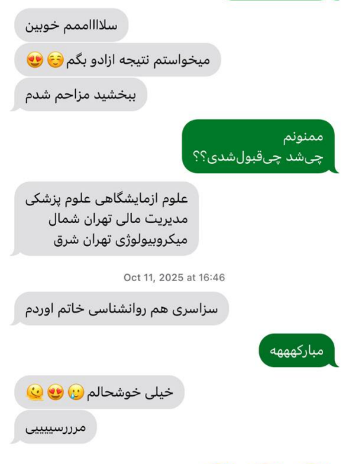
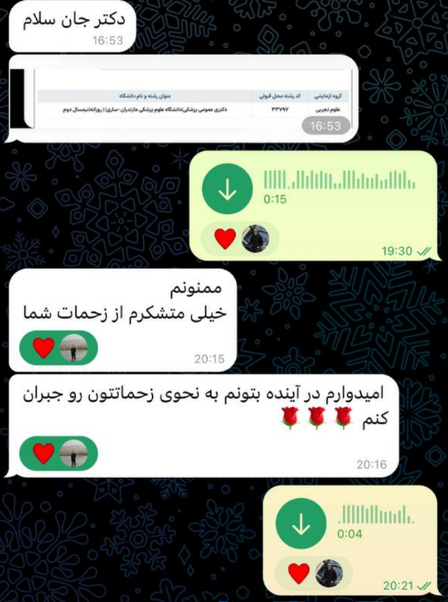

من واقعاً چه میخواهم؟
چه چیزهایی برایم مهماند؟ در چه محیطی بهتر عمل میکنم؟ و چه نوع آیندهای با من سازگارتر است؟
رشتهای که انتخاب میکنی فقط تعیین نمیکند چه درسهایی بخوانی؛ میتواند روی محیطی که در آن زندگی و کار میکنی، فرصتهای شغلی، سبک زندگی، درآمد، مهاجرت و حتی آزادی انتخابهای بعدیات اثر بگذارد. سیتالوپلن کمک میکند قبل از تصمیم، خودت و واقعیت مسیرهای پیش رو را بهتر ببینی.
چه چیزهایی برایم مهماند؟ در چه محیطی بهتر عمل میکنم؟ و چه نوع آیندهای با من سازگارتر است؟
نه فقط اسم و پرستیژ آن؛ درسها، دانشگاه، محیط کار، سبک زندگی، درآمد، مهاجرت و مسیرهای بعدی.
وقتی هر انتخاب مزایا و هزینههای خودش را دارد، چطور معیارهای خودم را کنار واقعیت گزینهها بگذارم؟
پشت انتخاب رشته معمولاً سؤالهای خیلی بزرگتری وجود دارد؛ سؤالهایی که جوابشان را نمیشود فقط از دفترچه انتخاب رشته یا چند سرچ پراکنده پیدا کرد.
اعلام نتایج معمولاً با اضطراب، مقایسه، انتظار خانواده و ترس از دست دادن فرصتها همراه است. ما ترجیح میدهیم شناخت مسیر خیلی قبلتر از لحظه ثبت کدرشته آغاز شود؛ زمانی که هنوز فرصت داری بدون هیاهو خودت را ببینی، سؤال بپرسی، گزینههای مختلف را بررسی کنی و تصمیمت را بسازی.
سیتالوپلن انتخاب رشته را فقط به «چینش انتخابها» محدود نمیکند. ما تلاش میکنیم چهار تصویر را کنار هم قرار دهیم: تو چه کسی هستی؟، مسیرهای پیش رو واقعاً چه شکلیاند؟، دادهها درباره آینده این مسیرها چه میگویند؟ و تجربه کسانی که آن راه را رفتهاند چیست.
آزمونهای معتبر، گفتوگو، ارزشها، علایق، محدودیتها، ترجیحات و توانمندیها.
دروس، دانشگاه، محیط کار، سبک زندگی، درآمد، مهاجرت و مسیر رشد.
استفاده از دادههای بازار کار، مطالعات داخلی و بینالمللی و ابزارهای علمی.
دانشجویان، فارغالتحصیلان و افراد فعال همان رشته؛ کسانی که آن مسیر را واقعاً زندگی کردهاند.
علایق، ارزشها، توانمندیها و دغدغههای فعلی خودت را بشناس.
لازم نیست انتخابت فقط بین چند رشته آشنایی باشد که همیشه دربارهشان شنیدهای. گزینههایت را گستردهتر و واقعبینانهتر ببین.
تحصیل، بازار کار، درآمد، مهاجرت، سبک زندگی، امکان کارآفرینی، رشد و تغییر مسیر را بررسی کن.
با کنار هم گذاشتن معیارهای شخصی و دادهها، گزینهها را مقایسه کن و به یک اولویتبندی قابلدفاعتر برس.
سیتالوپلن یک تصمیمیار انتخاب مسیر تحصیلی و شغلی است؛ برای اینکه انتخاب رشته از یک تصمیم عجولانه بر پایه رتبه، شنیدهها، فشار محیط یا اعتبار اجتماعی، به یک فرایند آگاهانهتر و شخصیتر تبدیل شود.
در سیتالوپلن، فقط نمیپرسیم «به چه رشتهای علاقه داری؟». تلاش میکنیم بفهمیم چه چیزهایی برای تو مهماند، چه نوع زندگی و محیط کاری با تو سازگارتر است، واقعیت مسیرهایی که پیش رو داری چیست و هر انتخاب در بلندمدت چه فرصتها و محدودیتهایی میتواند ایجاد کند.
برای این کار از ابزارهای روانسنجی و رغبتسنجی معتبر، دادههای رشتهها و بازار کار، پژوهشهای علمی، تجربه دانشجویان و فارغالتحصیلان، مدلهای تصمیمگیری و ابزارهای نوین استفاده میکنیم.
سؤال این است که کدام مسیر برای تو مناسبتر است.
انتخاب مسیر تحصیلی و شغلی فقط یک مسئله آموزشی نیست. شناخت فرد، واقعیت رشته، بازار کار، تجربه حرفهای و شرایط آینده همگی بر این تصمیم اثرگذارند.
به همین دلیل، سیتالوپلن بهصورت یک تیم چندمحوری و بینرشتهای شکل گرفته است؛ متشکل از دبیران، مشاوران، دانشجویان و فارغالتحصیلان رشتههای مختلف و همچنین مشاوران و ناظران علمی-اجرایی دانشگاهی.
اعضای تیم از حوزههایی مانند پزشکی، داروسازی، بیوتکنولوژی، روانشناسی و مدیریت و همینطور مهندسی برق، صنایع، مکانیک و دیگر رشتهها و از دانشگاههایی از جمله دانشگاه تهران، دانشگاه علوم پزشکی شهیدبهشتی و دانشگاه صنعتی شریف هستند.
بخشی از اعضای مجموعه خود فارغالتحصیل مدارس برتر کشور از جمله فرزانگان ۱ و علامه حلی ۱ بودهاند؛ تجربهای که در کنار سالها تدریس، مشاوره و کار مستقیم با دانشآموزان، باعث شده درک نزدیکتری از دغدغههایی داشته باشیم که یک دانشآموز در زمان تصمیمگیری تجربه میکند.
استفاده از پژوهشهای داخلی و بینالمللی، ابزارهای معتبر روانسنجی و رغبتسنجی و دادههای واقعی.
اعضایی با سابقه تدریس، مشاوره و تجربه واقعی تحصیل یا فعالیت در مسیرهایی که دانشآموزان درباره آنها تصمیم میگیرند.
ترکیب روانشناسی، شناخت رشتهها، بازار کار، تجربه انسانی، داده و مدلهای تصمیمگیری.
اعضای تیم سابقه همکاری با مدارس نمونه دولتی شرق تهران، مدارس دولتی و غیردولتی مطرح شمال و غرب تهران و مؤسسات تخصصی مشاوره و انتخاب رشته را نیز در کارنامه دارند.
تجربه آموزشی، مشاورهای و پژوهشی تیم ما پشتوانه هر مرحله از فرایند تصمیمسازی شماست.
بخشی از تجربه افراد و قبولیهای دانشآموزانی که اعضای تیم سیتالوپلن در مسیر هدایت تحصیلی و انتخاب رشته همراهشان بودهاند.



برای ما مهم است دانشآموز در پایان، انتخابش را بهتر بشناسد و از مسیر تصمیمگیری رضایت بیشتری داشته باشد.



کافی است شروع کنی، ما در این مسیر همراهتیم.
برای پرسیدن سؤال، پیگیری مشاوره یا دنبالکردن مطالب سیتالوپلن، از هر مسیری که راحتتری مستقیم به ما وصل شو.
برای دریافت راهنمایی بیشتر، اطلاعاتت را وارد کن.
بهزودی با شما تماس میگیریم.